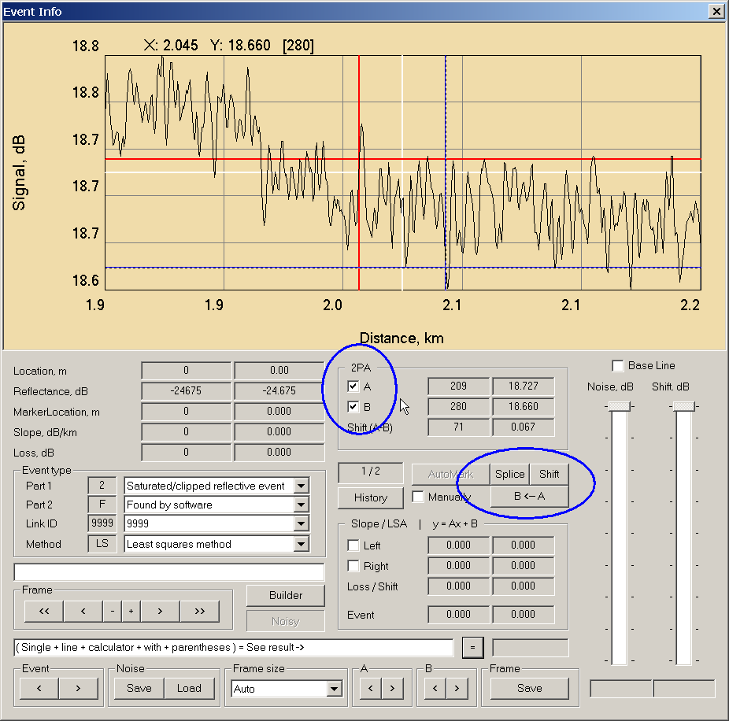

|
Добавлен перманентный режим видимости для маркеров A и B.
В нормальном режиме, маркеры A и B имеют локальные координаты (привязаны к текущему фрейму) и сбрасываются при каждом обновлении / рефреше.
В перманентном режиме, маркеры A и B имеют глобальные координаты (привязаны к трассе) и видны, если их координаты находятся внутри текущего фрейма. Если маркеры выходят из области видимости фрейма, они НЕ видны, но продолжают быть установленными (не сбрасываются).
Если они снова попадают в область видимости, они опять визуализируются.

|